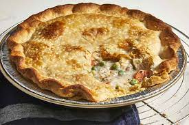

Chicken Pot Pie

Description
Wonderful pie made from scratch with carrots,peas,and celery.
Add thyme or poultry seasoning for flavor
Ingredients
- Chicken
- Vegetables
- Butter
- Flour
- Seasonings
- Broth
- Milk
- Pie Crusts
Steps
- Gather all Ingredients
- Preheat the oven 425 F
- Combine the chicken,carrots,peas,and celery in a saucepan; add water to cover and bring to a boil.
- WHile the chicken is cooking, melt the butter in another saucepan over medium heat.
- Slowly stir in chicken broth and milk. Reduce heat to medium-low and simmer until thick, 5 to 10 minutes. Remove from heat and set aside.
- Place chicken and vegetables in the bottom pie crust. Pour hot liquid mixture over top. Cover with top crust, seal the edges, and cut away any excess dough. Make several small slits in the top crust to allow steam to escape.
- Bake in the preheated oven until pastry is golden brown and filling is bubbly, 30 to 35 minutes. Cool for 10 minutes before serving.
Homepage